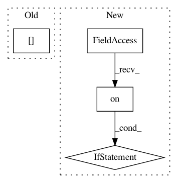

c517e0b8b34a85b8142b4669c152b6e62c02d8e2,gpytorch/lazy/lazy_tensor.py,LazyTensor,diag,#LazyTensor#,567
Before Change
batch_iter = torch.arange(0, size[0], dtype=torch.long, device=self.device)
batch_iter = batch_iter.unsqueeze(1).repeat(1, size[1]).view(-1)
row_col_iter = row_col_iter.unsqueeze(1).repeat(size[0], 1).view(-1)
return self._get_indices(row_col_iter, row_col_iter, batch_iter).view(size[0], size[1])
else:
return self._get_indices(row_col_iter, row_col_iter)
After Change
n vector. If this LazyTensor represents a batch (e.g., is :math:`b \times n \times n`), this will be a
:math:`b \times n` matrix of diagonals, one for each matrix in the batch.
if settings.debug.on():
if not self.is_square:
raise RuntimeError("Diag works on square matrices (or batches)")
row_col_iter = torch.arange(0, self.matrix_shape[-1], dtype=torch.long, device=self.device)
return self[..., row_col_iter, row_col_iter]
def dim(self):
In pattern: SUPERPATTERN
Frequency: 4
Non-data size: 4
Instances
Project Name: cornellius-gp/gpytorch
Commit Name: c517e0b8b34a85b8142b4669c152b6e62c02d8e2
Time: 2019-03-18
Author: gpleiss@gmail.com
File Name: gpytorch/lazy/lazy_tensor.py
Class Name: LazyTensor
Method Name: diag
Project Name: cornellius-gp/gpytorch
Commit Name: 1193d96d48cf1db1f4902b4bd613880defd1b8ab
Time: 2019-04-02
Author: jake.gardner@uber.com
File Name: gpytorch/constraints/constraints.py
Class Name: Interval
Method Name: inverse_transform
Project Name: cornellius-gp/gpytorch
Commit Name: 1193d96d48cf1db1f4902b4bd613880defd1b8ab
Time: 2019-04-02
Author: jake.gardner@uber.com
File Name: gpytorch/constraints/constraints.py
Class Name: Interval
Method Name: transform
Project Name: cornellius-gp/gpytorch
Commit Name: 2ceed3bc57e2e890cd5c80d3f38ae544971c30f4
Time: 2018-05-01
Author: gpleiss@gmail.com
File Name: gpytorch/functions/inv_matmul.py
Class Name: InvMatmul
Method Name: forward